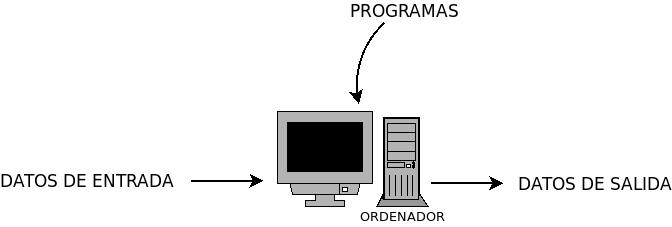

1. El sistema informático¶
La palabra informática procede de la fusión de los términos «INFORMación» y «autoMÁTICA»:
informática = INFORMación autoMÁTICA
Podemos definir la informática como la disciplina que se estudia el tratamiento automático de la información.
Por su parte, un sistema informático es un sistema capaz de almacenar y procesar automáticamente información y se encuentra consitutido por tres componentes:
Los componentes físicos o hardware.
Los componentes lógicos o software, dentro del cual pueden distinguirse:
Software base: sistema operativo y firmware.
Las aplicaciones informáticas.
El personal informático.
Un sistema informático actúa del siguiente modo:
El procesamiento para la obtención de la salida a partir de la entrada la llevan a cabo los componentes físicos del S.I. gracias a la ejecución de programas que no son más que un conjunto ordenado de instrucciones, que persiguen la consecución de un determinado fin. Los programas con propósito común pueden agruparse formando aplicaciones informáticas.